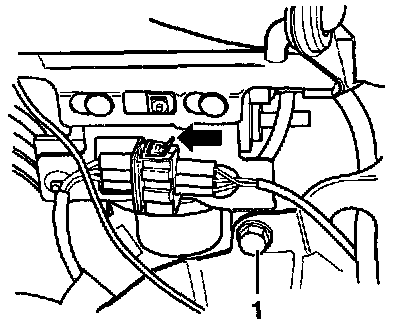

Vacuum Pump: Service and Repair
Removing and Installing:

- Remove battery. Service and Repair
- Remove windshield washer fluid reservoir.
- Separate 3-pin connector.
- Remove nut -1-.
- Press securing plate with vacuum pump in direction of arrow and remove.
- Remove vacuum hose from vacuum pump -V18-.
Install in reverse order of removal.